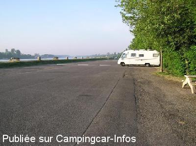

APN = Parking toléré jour/nuit de :
DRUSENHEIM
(N° 661)
Accès/adresse :
Route du Rhin, RD 429
67410 DRUSENHEIM
67410 DRUSENHEIM
Latitude : (Nord) 48.7543° Décimaux ou 48° 45′ 15′′
Longitude : (Est) 7.96682° Décimaux ou 7° 58′ 0′′
Tarif : Gratuit
Services :
Autres informations :
Immense parking goudronné en bordure immédiate du Rhin

Le 06/05/2007 par
de
Hendrik
le 16/08/2013 :
très bel endroit, bien entretenu
avec animation par le trafic sur le Rhin
l'histoire de Drusenheim est très bien expliquée par des multiples panneaux ditactiques
très bel endroit, bien entretenu
avec animation par le trafic sur le Rhin
l'histoire de Drusenheim est très bien expliquée par des multiples panneaux ditactiques
de
beauvois
le 17/08/2009 :
Je suis passé début août, très agréable repos toute la journée, au fond du parking et de la berge. Nuit très calme, lieu de promenade des locaux sur la berge du canal, passage du bac toujours gratuit, passage original pour l'Allemagne.
Je suis passé début août, très agréable repos toute la journée, au fond du parking et de la berge. Nuit très calme, lieu de promenade des locaux sur la berge du canal, passage du bac toujours gratuit, passage original pour l'Allemagne.
de
Eura01
le 01/06/2009 :
Parking très agréable et vue sur le Rhin avec le trafic des péniches. Possibilité de traverser pour l'Allemagne par le bac gratuit. Attention au porte à faux. A recommander.
Parking très agréable et vue sur le Rhin avec le trafic des péniches. Possibilité de traverser pour l'Allemagne par le bac gratuit. Attention au porte à faux. A recommander.
de
neptun
le 11/12/2008 :
guter Übernachtungs/Wochenendplatz direkt an der Fähre
wir haben hier die Frankreichtour 2008 abgeschlossen.
Super zum entspannen nach einer langen Tour
leider keine VE-aber doch gut
guter Übernachtungs/Wochenendplatz direkt an der Fähre
wir haben hier die Frankreichtour 2008 abgeschlossen.
Super zum entspannen nach einer langen Tour
leider keine VE-aber doch gut
de
BIGNARD Patrick
le 24/04/2007 :
Grand parking calme, passage de péniches de commerce et de croisiére. Je pense que le week-end dans la journée il doit y avoir beaucoup de monde, il est préferable d'y être en fin de journée pour pouvoir toujours étre accepté pour le stationnement.
Grand parking calme, passage de péniches de commerce et de croisiére. Je pense que le week-end dans la journée il doit y avoir beaucoup de monde, il est préferable d'y être en fin de journée pour pouvoir toujours étre accepté pour le stationnement.
de
nouchka
le 26/09/2006 :
Avons bien apprécié ce parking où nous avons stationné la nuit dernièrement, calme (seul bruit des bateaux), site agréable.
Avons bien apprécié ce parking où nous avons stationné la nuit dernièrement, calme (seul bruit des bateaux), site agréable.